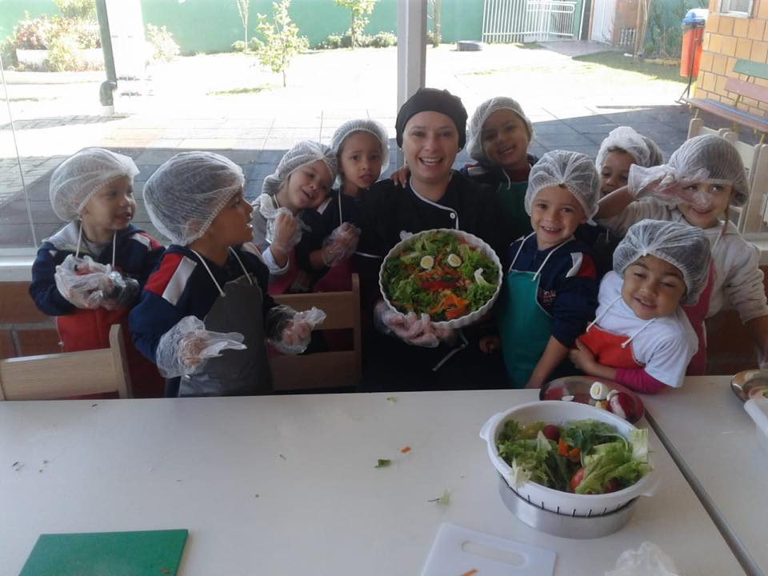
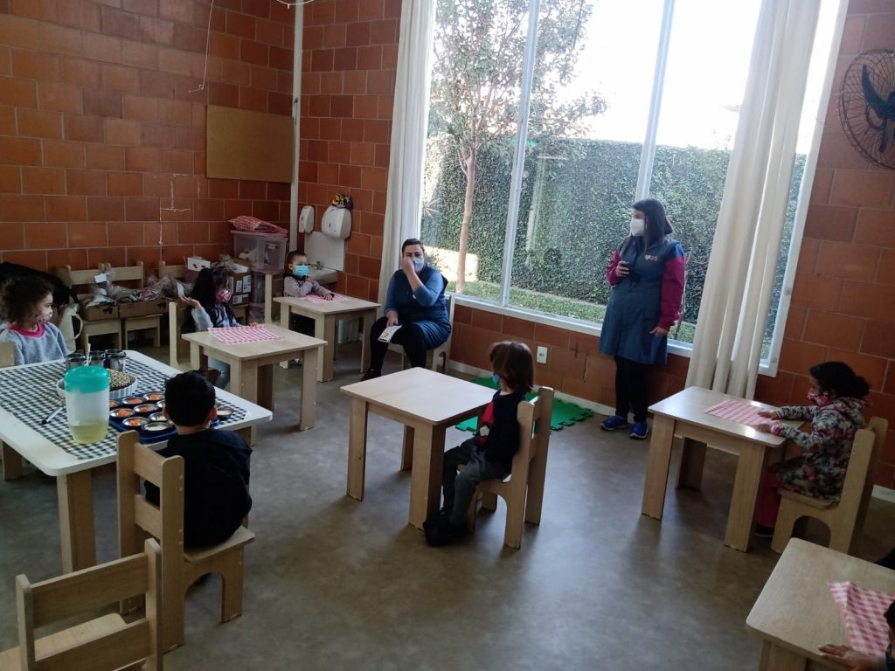
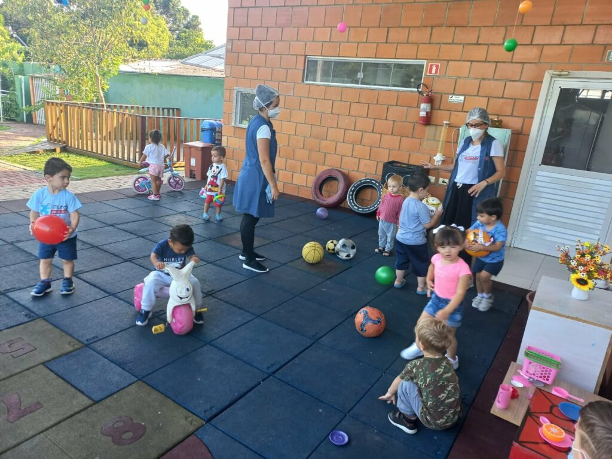
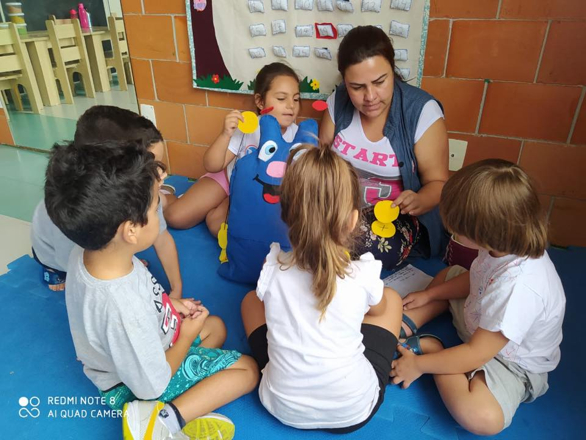
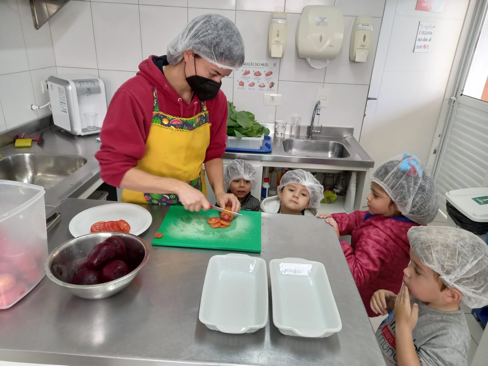
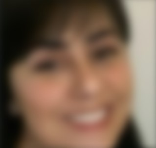

Protagonismo infantil
O foco está no desenvolvimento do protagonismo infantil.

Uma escola para todos
O Centro de Educação Infantil Mundo para Todo Mundo nasceu com o princípio da educação inclusiva e de qualidade.
Para famílias
O Centro de Educação Infantil Mundo para Todo Mundo apresenta, em sua comunicação pública, uma proposta de educação inclusiva em Curitiba.
A atuação publicada pelo CEI menciona habilidade técnica e social para lidar com desafios do sistema educacional, respeitando cada criança e sua história.
O trabalho do CEI é respaldado pelo pensar científico e técnico desenvolvido por grandes pensadores da educação.
O foco está no desenvolvimento do protagonismo infantil.
As diferenças são respeitadas como parte da identidade de cada um.
Profissionais participam de processos formativos conectados ao cotidiano.
Imagens do acervo público do Centro de Educação Infantil.




O site oficial apresenta aviso de matrículas para 2026. Isso não confirma vagas ou condições atuais: fale diretamente com a secretaria para conferir o processo vigente.
Perguntas para a secretaria
O CEI publica a atuação de pessoas que acompanham seu trabalho de educação e inclusão.

Diretora do Centro de Educação Infantil Mundo para Todo Mundo
Consultora de Educação Inclusiva
Respostas diretas, sem prometer vagas, condições ou serviços que precisam ser confirmados com o CEI.
O site oficial apresenta um aviso de matrículas para 2026. Confirme processo, condições e disponibilidade diretamente com a secretaria.
Use o e-mail secretaria@mundoparatodomundo.org.br ou ligue para (41) 3040-5872.
Rua Hipólito da Costa, 2.252, no bairro Boqueirão, em Curitiba.
Secretaria
secretaria@mundoparatodomundo.org.br(41) 3040-5872Rua Hipólito da Costa, 2.252
Boqueirão · Curitiba